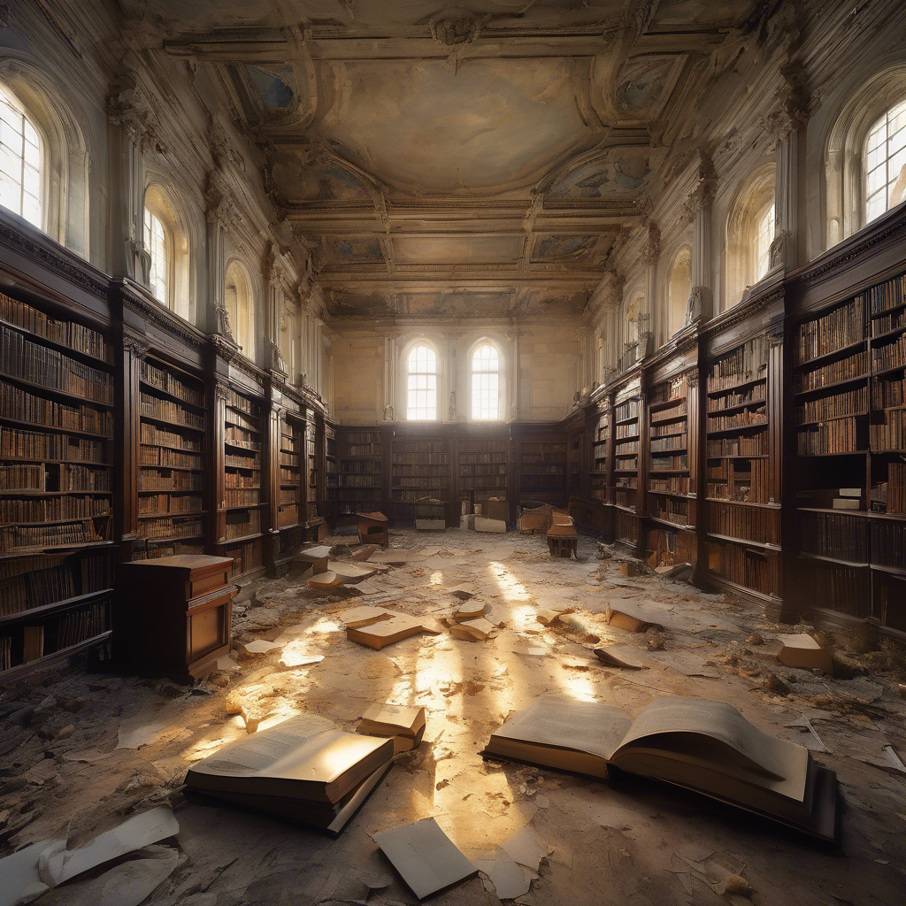

A fénylő szoba egy régi könyvtár maradványait rejti. A polcokon szénné égett könyvek romjai, összeomlott gerendák, és széttört fiolák között egyetlen ép könyv fekszik egy márványoltáron – a borítója vörösen izzik. Amint megközelíted, a könyv magától felcsapódik, és erős, vörös fény árad belőle. A lángok azonban nem égetnek – inkább melegítenek. Az amuletted ragyogni kezd, és a könyv egy mágikus tűzpajzsot vet köréd. A fal egyik szakasza remegni kezd, majd lassan elfordul – egy titkos ajtó tárul fel előtted.
Menj a 8-as bekezdésre.